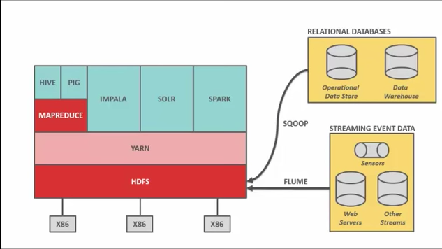
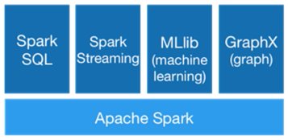

The Big Data Ecosystem
Big data is the talk of the town. What is it? What are the components? Let us demystify some of these jargons

Spark
Open source - Apache. New, but very widely used. - flexible alternative to MapReduce - Data stored in HDFS, Cassandra - not replace Hadoop
Hadoop and Hadoop ecosystem
Hadoop - way to distribute very large files over multiple machines. Uses HDFS (Hadoop File System). HDFS will duplicate data for fault tolerance. Hadoop uses MapReduce which allows computation on that data. Together MapReduce + HDFS = Hadoop
HDFS - 128 MB blocks of data that is duplicated and split across multiple nodes. Small blocks allow massive parallelization.
Hadoop has a schema on read whereas RDBMS has a schema on write logic. HDFS does not use RDBMS tables, data files are generally .txt or binary files.
HDFS
HDFS is written in Java and sits on top of a standard OS of that machine. HDFS is great only if your data files are quite large, like 1GB and not if they are tiny - like 1kb.
Writing data into HDFS is interesting. All datasets are to be replicated 3 times. You talk to the co-ordinator node which tells which nodes to write / read data from. You write to the first node which tells you where to put the other 2 replicas. This format of processing is called pipeline processing in HDFS.
When a node fails, the co-ordinator finds which copies of data were lost and it instructs the remaining nodes to replicate those blocks amongst the remaining nodes so all blocks of data are now replicated 3 times.
Data Locality is important in HDFS for speed. Since data is replicated 3 times, the coordinator can instruct different processing operations to be performed on different nodes. Priority is given to that node which has the max data blocks required for that data operation, since working on data in that node is much faster than reading data from network.
MapReduce
Allows computation across Hadoop nodes. It uses a job tracker on main node and task trackers on all slave nodes. Task trackers allocate CPU and memory and monitor the tasks.
Developed by Google in 2004 which led to development of Hadoop. MapReduce was hard to master and use, requires lot of Java code. Building complex jobs is very hard.
YARN
Yarn manages compute resources and sits on top of HDFS. Yarn stands for Yet Another Resource Manager.
Data loaders.
SQOOP
SQOOP = SQL + HadOOP for ETL (Extract, Transform, Load), get data from SQL like tables into Hadoop
FLUME
To get streaming data into Hadoop
Data searching
HIVE
Accessing data from HDFS is via a .java program and not a sql like in a RDBMS. A number of flavors of Hadoop came out that answered this limit. For instance, Facebook created Hive which allowed you to write standard sql which will be converted to java for Hadoop. Hive reduces 1000s of lines of Java into SQL, rather the reverse.
PIG
Same as HIVE, but higher level language and is anologous to PL/SQL.
IMPALA
Developed as Hive and Pig were not just as fast. So for low latency sql, Impala was created and it bypasses MapReduce as it communicates directly with HDFS
SOLR
If you wan to Google (search) your Hadoop data. You can pipe SQOOP and FLUME into SOLR on the way into HDFS so it indexes on the fly for great search.
SPARK
Apache open source framework that allows performing batch and real-time data processing on HDFS. It was built by learning the difficulties with MapReduce. It can be considered as a general purpose compute engine.
Integrates very well if Python, Scala, Java. New products like Spark Streaming is designed for developer ease of use.

RDD
Resilient Distributed Datasets representation of data in object format and allow computation on them. They contain data lineage. Transformations are what you do to RDD that result in creation of a new RDD. Actions is questions / searches on the RDD to get your answer.
Spark does all work as lazy evaluations and work on the data only when necessary. Further, data lineage allows them to rebuild data or RDD that is lost in the event of a fault.
GFS - Google File System
A very early form of a distributed file system. It had a 3 time data replication. With more nodes, Google improved both their compute and storage power. It built MapReduce to work on this GFS.
After Google published their white paper on this, Hadoop was born out of a custom implementation of this.
Commercial packages
Since there are numerous alternates, some companies bundle them and sell as their products with some additional value added components.
MapR
MapR stack comprises MapR = HDFS + YARN + SPARK + SPARK SQL.